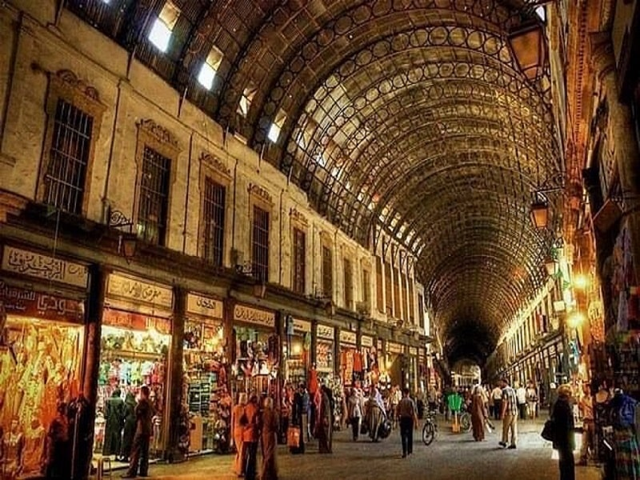

Şam ve Hamidiye Çarşısı
Suriye'nin başkentidir. Ayrıca, Şam Valiliğinin ve Rif Şam Valiliği'nin de idari başkentidir. Şam, dünya tarihi boyunca, hiç aralıksız en uzun süre kullanılan şehir olarak anılır.
Dünya tarihindeki ilk cinayet olan Kabil ile Habil olayının Şam'ın kuzeyindeki Kasiyun Dağı'nda gerçekleştiğine inanılır. En bilinen tarihi mekanlardan biri Emevi Camii'dir. Ayrıca, bazı müslümanlar arasında ahir zamanda Mehdi'nin ve İsa'nın bu camiye ineceği inancı vardır. 1516 yılında Yavuz Sultan Selim'in Suriye'yi ele geçirmesiyle oluşturulan Şam vilayetinin merkezi haline gelen Şam kenti, hac yolu üzerindeki toplanma noktası olması nedeniyle de ticari yönden önemini korumuştur.
I. Dünya Savaşı'nın son günlerinde İngiliz işgaline giren kent Sykes-Picot Anlaşması uyarınca 1920'de Fransa'ya bırakılmış olup, Fransız sömürgeliği yıllarında çok sayıda tahribata ve yağmalamaya uğramıştır. 1946 yılındaki ayaklanmayla Fransız sömürgesi olmaktan kurtulmuş ve Suriye'nin başkenti olmuştur. Bugün hala devam etmekte olan Suriye İç Savaşı'nda büyük hasar alan şehir, tarihi dokusunu kaybetme ihtimali ile yüz yüzedir.
Çarşının üzeri 19. yüzyılın sonlarında kapatılmış. Oluklu demirden oluşan kubbesindeki deliklerin, 1925 yılındaki ulusal direniş hareketine Fransız uçaklarının makineli tüfeklerinden çıkan kurşun delikleri olduğu söylenmektedir. Sokakları Roma döneminden kalsa da şimdiki iki katlı mağazaların, kubbesinin ve geniş sokaklarının 19. yüzyılda gerçekleştirildiği biliniyor. O dönemde şehri ve çarşıyı ziyaret eden Osmanlı Padişahı II. Aldülhamit'in şerefine çarşının adının bu şekilde değiştirildiği de bilinen ayrı bir gerçek.
2002 yılında yapılan geniş kapsamlı bir restorasyon sonucunda, çarşı 19. yüzyıl dönemindeki haline benzer bir duruma getirilmiş.